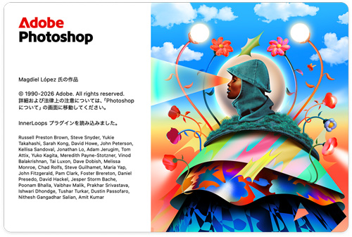
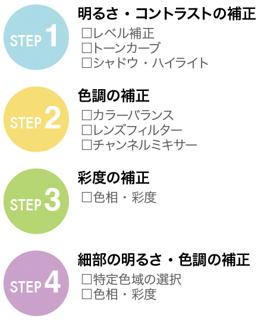
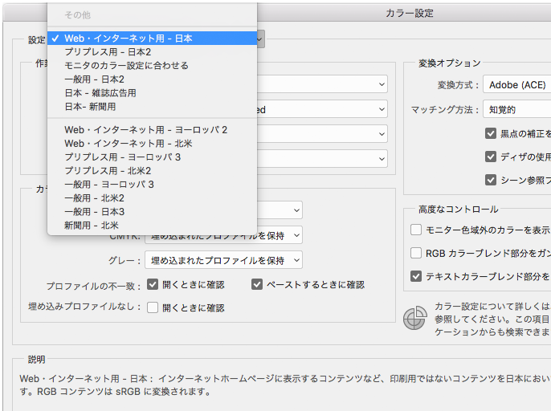
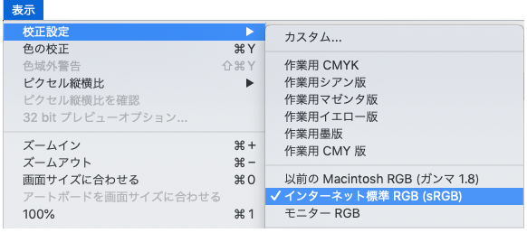
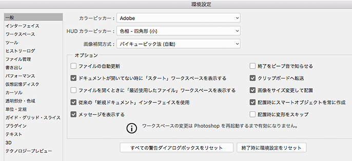
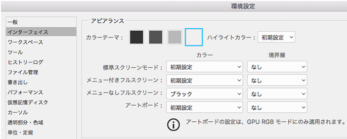
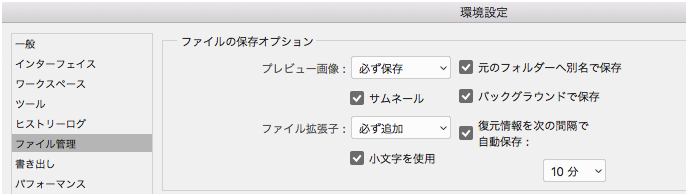
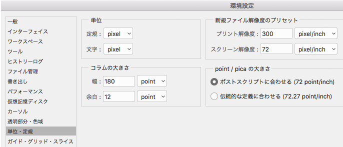
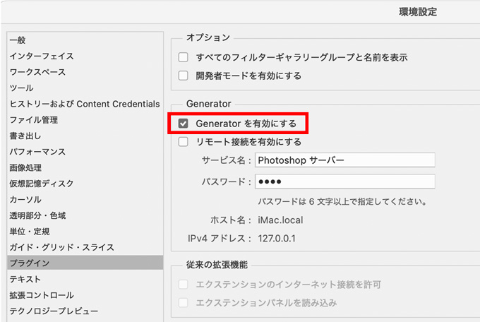
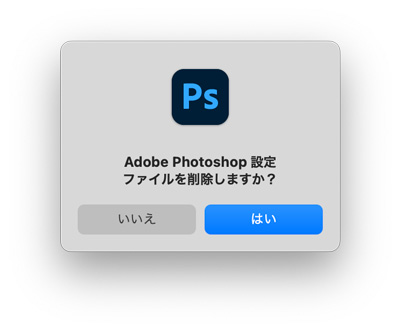

Photoshopとは

- Photoshopは、ラスターデータを作成するアプリケーションです
Raster Data
- ラスターデータは、行と列の格子状（グリッド状）に並んだセル（ピクセル）で構成されるデータです
Adobe Photoshop チュートリアル
Photoshopの目的
初心者がPhotoshopの勉強をするときのポイントは以下の３点です。
- 選択範囲を決める。（どこをという最初の部分。または主語にあたります。）
- 補正する。（写真をキレイにします。目的にあった画像にします。）
- 加工する。（マスクや合成をして、元の画像にはない特徴をつくっていきます。）

Photoshopの起動
- 「Photoshop2025」のアイコンをダブルクリック
カラー設定
- 「編集」→「カラー設定」
- 「Web・インターネット用 - 日本」を選択する

校正設定
- 「表示」→「校正設定」→「インターネット標準RGB」

環境設定
一般

インターフェイス

ファイル管理

単位・定規

プラグイン

Photoshopの初期化
目的は、無駄に消費されているメモリの記憶をリセットすることです。
- アイコンをダブルクリック等で起動します。
- このとき［Ctrl］＋［Alt］＋［Shift］を押したままにします。
- Adobe Photoshop設定ファイルを削除しますか？」とダイアログがでます。

メモリを管理する
- ROM：Read Only Memory
- RAM：Random Access Memory
Photoshopは、開いているファイルサイズの数倍のメモリが必要となります。
- 開く（Open）
- 保存（Save）
- 複製（Copy）
- 戻る（Undo）
最低この動作を確保するメモリが必要となります。
確保できない場合に「エラー」になります。
「レイヤー」が増えるだけで、ファイルサイズが大きくなります。
画像のファイル形式
| GIF | 256色以下に減色したときに使われる。インターネット上での利用に適した画像フォーマット |
|---|---|
| JPEG | フルカラー（約1670万色）をサポートした、インターネット上での利用を考え軽量化された圧縮形式の画像フォーマット |
| PNG | 24ビット画像をサポートする、インターネット上で広く使われることを目的として開発された画像フォーマット |
| OSやアプリケーションの違いを超えて使用できる、柔軟性に富んだ画像フォーマット | |
| BMP | Windowsで一番汎用性のある画像フォーマット |
| PICT | Macで一番汎用性のある画像フォーマット |
| TIFF | 印刷用だけでなく、事実上すべてのベクターグラフィックソフト、フォトレタッチソフトでサポートされている画像フォーマット |
| EPS | 印刷用として広く使われている画像フォーマット |
拡張子
- ファイル形式の識別子
| ファイル形式 | 拡張子 |
|---|---|
| Photoshopデータ | .psd |
| Illustratorデータ | .ai |
| GIF | .gif |
| JPEG | .jpg |
| PNG | .png |
| WEBP | .webp |
| TIFF | .tif |
| EPS | .eps |